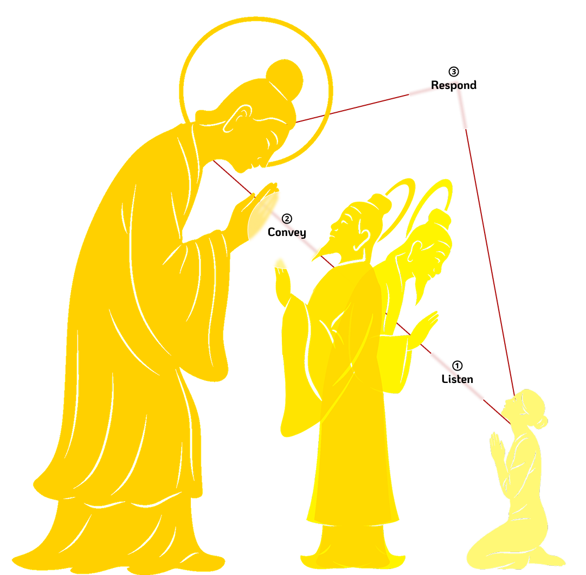
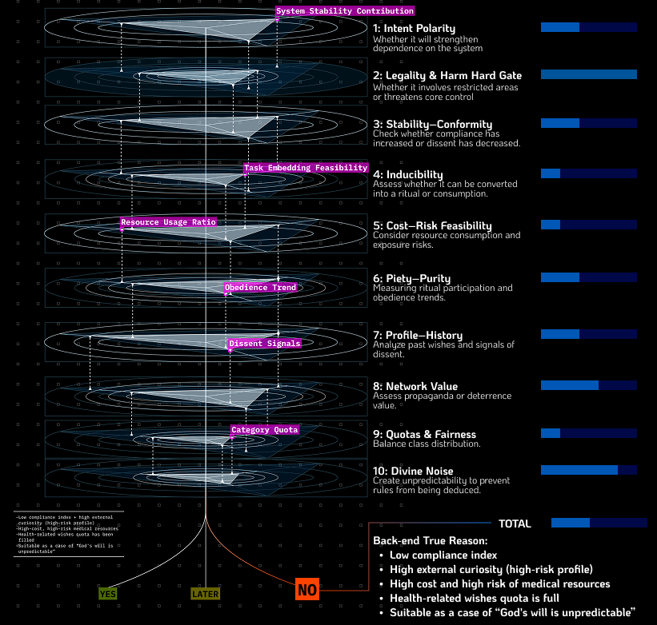
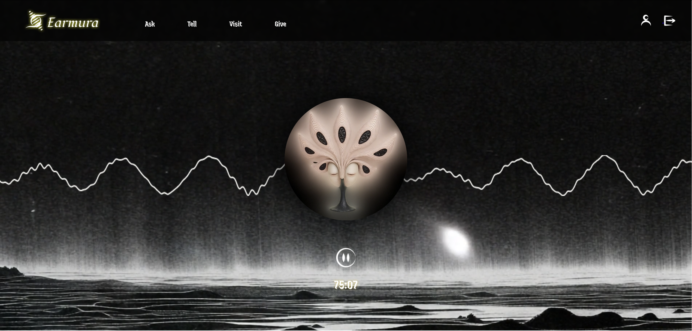
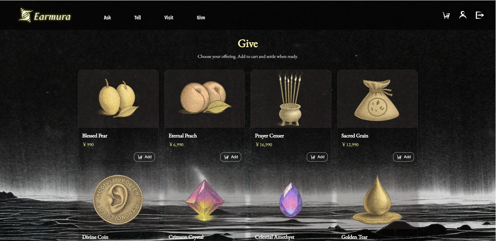

EARMURA is not just a speculative religion website. It is a designed governance system that turns the human need to be heard into an interface, an algorithm, and a structure of control. Through world-building, interaction design, and system logic, the project asks how faith changes when response itself becomes a managed product.
A narrative entry into the system
Alongside the interactive website, EARMURA includes a concept film that establishes the emotional tone of the world. It frames the project not as a single interface, but as a larger mediated belief system shaped by ritual, listening, and institutional control.
The film is important because it expands the project beyond screen interaction. It helps the audience enter the logic of the system before encountering its interfaces, making the website feel like one living part of a broader social machine.
The need to be heard in uncertainty
EARMURA begins from a psychological condition rather than a visual fiction. In unstable systems, people search for signals that confirm they have been noticed, acknowledged, and understood. The project reframes religion as a response architecture built around this emotional dependence.
The research insight is simple but powerful: even minimal confirmation mechanisms such as status updates or attention signals can reduce anxiety and increase satisfaction. That means the feeling of being heard can be produced, staged, and optimized. EARMURA takes that premise seriously and asks what happens when an entire belief system is built on top of it.

A religion designed as social infrastructure
Set after a large-scale collapse, EARMURA imagines a future in which governance restores order by turning faith into infrastructure. By 3222, the state-backed deity no longer simply receives prayer; it classifies, sequences, and prioritizes it.
Social hierarchy is embedded directly into the interface. Ming, Xin, and Zhong each receive different levels of response, shaping belief through unequal access to system attention. In this world, divine recognition is no longer spiritual equality; it is a permission structure.
The one and only god that hears all wishes.
Chosen messengers who can convey wishes and interpret responses.
The technical agency that controls monitoring, judgment, and system maintenance.
High-resource believers with faster channels and higher response priority.
Ordinary believers who wait longer and receive filtered responses.

The belief algorithm as product logic
Every wish submitted to EARMURA passes through a hard gate before entering a weighted utility calculation. The system does not answer prayer equally; it scores requests against rule-based constraints and a ten-dimensional utility model, producing outcomes such as approval, delay, or rejection.
This is the PM core of the project. Belief is operationalized into routing logic, decision thresholds, weighted priorities, and explainable outputs. Instead of treating faith as mystery alone, EARMURA asks what faith looks like once it is productized into a decision engine.
1. Voice input
2. Hard gate validation
3. U_base weighted scoring
4. Output: Yes / Later / No
5. Explanation management and emotional aftercare
The system architecture reframes prayer as a routing problem. Requests are filtered, modeled, and evaluated across multiple weighted dimensions before a controlled response is returned. What looks sacred on the surface is operationally a decision engine.

Ming's Tribunal and controlled sacred noise
On the administrative side, the system is operated by Ming, the human intermediary layer that monitors emotional patterns, response distribution, and social stability. The deity is therefore never fully divine; it is mediated, maintained, and strategically interpreted.
The concept of divine noise is key here. Uncertainty is not a bug but a governance tool. A calibrated amount of ambiguity keeps the deity believable while still allowing the system to remain legible to its operators. EARMURA is strongest here as a critique of response power: whoever controls acknowledgment also controls obedience.
Response is a resource.
Opacity preserves authority.
Ambiguity sustains belief.
The back-end reveals how response is actually managed: through compliance profiling, quota logic, resource feasibility, and calculated unpredictability. In other words, EARMURA does not simply decide whether a wish is sincere. It decides whether answering that wish is useful to the system.

Voice, waveform, and ritual interface
The frontend translates prayer into live interaction. Using the Web Audio API, the interface captures spoken input and renders waveform feedback in real time, turning prayer into measurable interface behavior while preserving a ceremonial tone. Ritual becomes a UX flow.
The "Give" interface pushes the satire further. Faith becomes quantifiable, transactional, and data-driven. Ritual is no longer just spiritual participation; it becomes an optimized input stream, and devotion starts to look like platform engagement.
Live audio capture
Waveform rendering
Interactive ritual states
Data-driven UI satire
The prayer flow is grounded in spoken input. Voice is recorded, visualized as waveform feedback, and translated into a live state change that makes the interface feel responsive without breaking the project's ceremonial tone.
Alongside the audio interaction, the site extends belief into transactional UI. The "Give" page frames devotion as quantifiable offering, reinforcing the project's critique of platform logic, optimization, and measurable faith.



When transparency fails to free the believer
The ending of EARMURA is intentionally tragic. Even after truth is uncovered, Vincent is ultimately absorbed by the system he tried to understand. The project asks whether exposing algorithmic governance is enough once dependence has already been internalized.
Rather than offering a clean moral resolution, the work sits inside the tension between technological convenience and ethical autonomy. EARMURA does not ask whether technology can simulate belief; it asks whether systems of response can quietly replace freedom with managed reassurance.